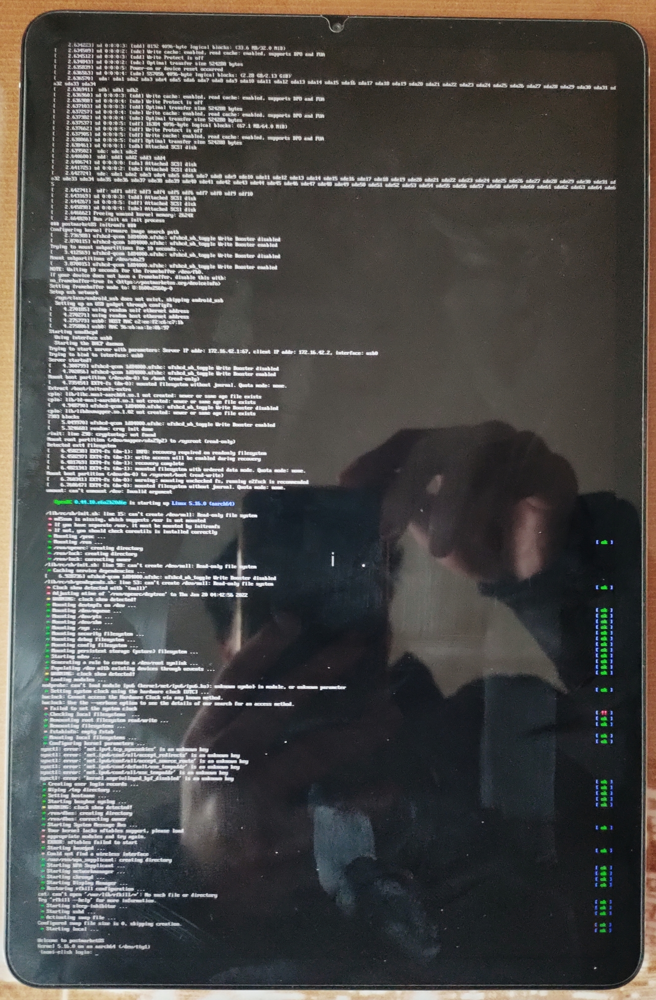

Xiaomi Mi Pad 5 Pro (xiaomi-elish)
Jump to navigation
Jump to search
|
 Xiaomi Pad 5 Pro running phosh ui with mainline kernel. | |
| Manufacturer | Xiaomi |
|---|---|
| Name | Mi Pad 5 Pro |
| Codename | xiaomi-elish |
| Released | 2021 |
| Category | testing |
| Original software | MIUI 12.5 (Android 11) |
| Hardware | |
| Chipset | Qualcomm Snapdragon 870 (SM8250-AC) |
| CPU | Octa-core (1x3.2 GHz Kryo 585 & 3x2.42 GHz Kryo 585 & 4x1.80 GHz Kryo 585) |
| GPU | Adreno 650 |
| Display | 2560x1600 120HZ IPS LCD |
| Storage | 128/256 GiB |
| Memory | 6/8 GiB |
| Architecture | aarch64 |
{kind=link}
| USB Networking |
Works
|
|---|---|
| Flashing |
Works
|
| Touchscreen |
Works
|
| Display |
Works
|
| WiFi |
Works
|
| FDE | |
| Mainline |
Works
|
| Battery |
Partial
|
| 3D Acceleration |
Works
|
| Audio |
Partial
|
| Bluetooth |
Partial
|
| Camera | |
| GPS | |
| Mobile data |
Unavailable
|
| SMS |
Unavailable
|
| Calls |
Unavailable
|
| USB OTG | |
| NFC |
Unavailable
|
| Accelerometer |
Works
|
|---|---|
| Magnetometer | |
| Ambient Light | |
| Proximity | |
| Hall Effect | |
| Barometer | |
| Power Sensor | |
| Camera Flash | |
|---|---|
| Keyboard | |
| Touchpad | |
| USB-A | |
| HDMI/DP | |
| Ir TX |
Unavailable
|
| Ir RX | |
| Stylus | |
| Haptics | |
| Ethernet | |
| FOSS bootloader | |
Contributors
- Jianhua
Users owning this device
- Jianhua (Notes: mainlining in progress)
How to enter flash mode
You have to press Power + Volume Down to enter the bootloader.
Installation
(Optional) Backup super partiton(need root, recommand to use magisk):
$ adb shell
$ su
$ dd if=/dev/block/by-name/super of=/sdcard/super.img
$ exit
$ exit
$ adb pull /sdcard/super.img
Install pmbootstrap and execute:
$ pmbootstrap init
$ pmbootstrap install
Note: pmbootstrap will ask you to select panel variant, check kernel command line
msm_drm.dsi_display0=qcom,mdss_dsi_k81_42_02_0a_dual_cphy_video is CSOT panel msm_drm.dsi_display0=qcom,mdss_dsi_k81_35_02_0b_dual_cphy_video is BOE panel
There are two ways to flash rootfs:
Before installing rootfs, please erase dtbo_b (dtbo_a reserved for android)
$ fastboot erase dtbo_b
1.Flash rootfs to the super partition:
$ pmbootstrap flasher flash_rootfs --partition super
$ pmbootstrap flasher flash_kernel --partition boot_b
$ fastboot set_active b
2.Use fastbootd to flash rootfs to system_b partition(dual boot):
$ fastboot set_active a
$ fastboot reboot fastboot
$ pmbootstrap flasher flash_rootfs --partition system_b
$ pmbootstrap flasher flash_kernel --partition boot_b
$ fastboot reboot bootloader
$ fastboot set_active b
SSH into the device (Full instructions):
$ ssh user@172.16.42.1
See also
Initial merge request: pmaports!2871 pmaports fork: [1]